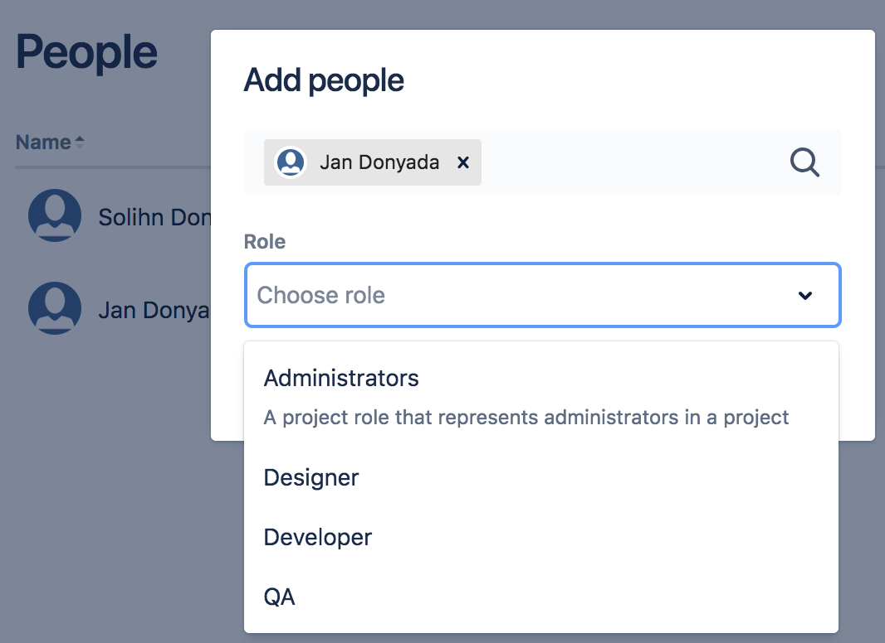
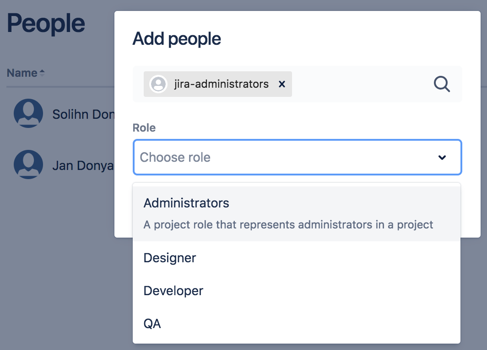
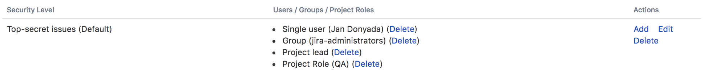
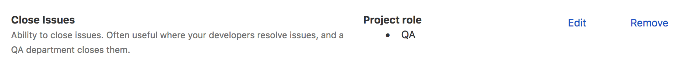
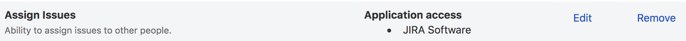
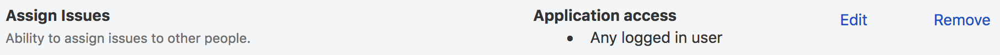
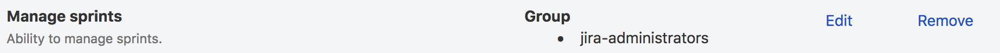
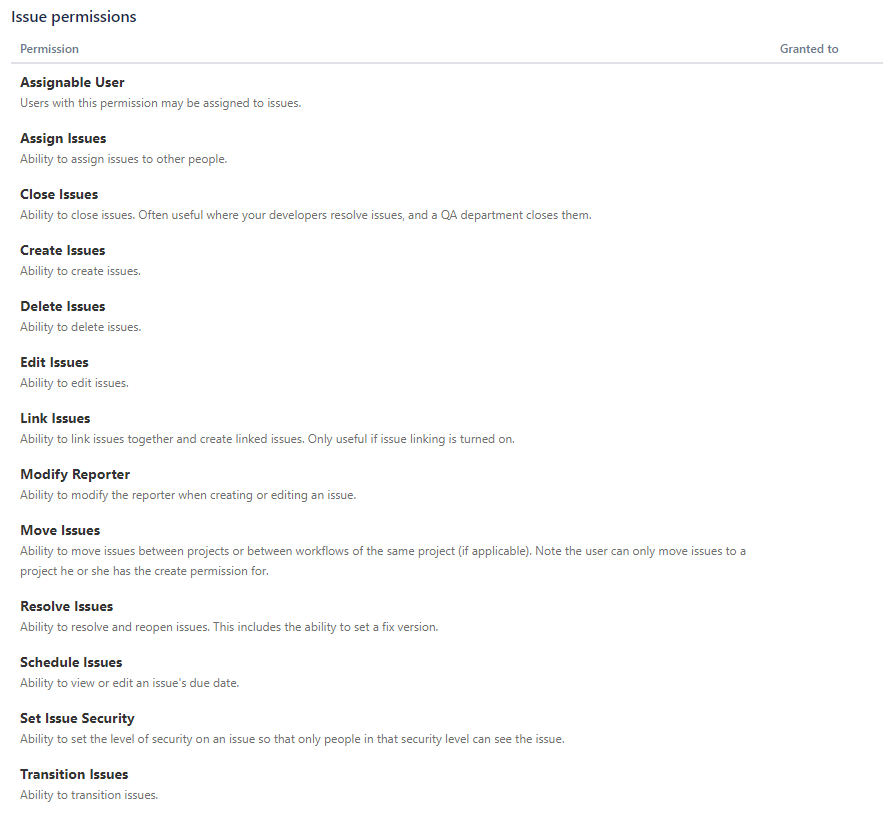
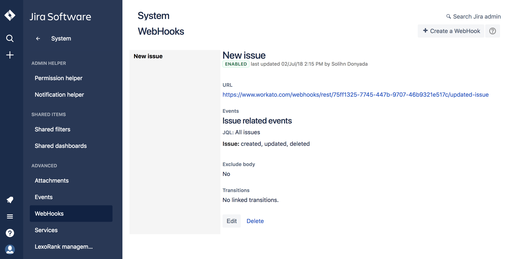
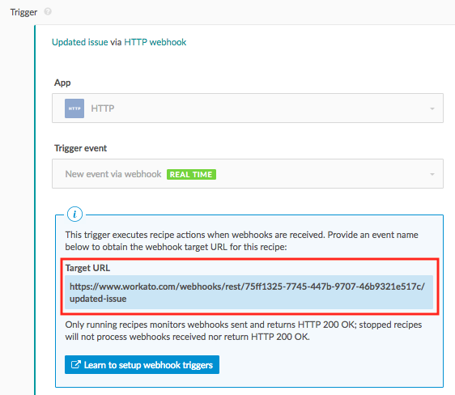

Jira
Jira gives users a simple way to organize and plan the release of any software. This allows development teams to lay out key steps to follow when releasing the software including 'Plan', 'Track','Release','and Report' to guide users.
With Workato, you can keep projects and issues in sync between Jira and other issue tracking systems used by other departments such as Zendesk, ServiceNow, or Salesforce's Desk.com.
API version
The Jira connector uses Jira Cloud REST API V2.
Supported editions and versions
The Jira connector works with Jira cloud instances and Jira on-premise instances from 7.x onwards.
How to connect to Jira on Workato
The Jira connector uses basic authentication to authenticate with Jira.

- Connection name
Give this Jira connection a unique name that identifies which Jira instance it is connected to.
- On-prem secure agent
To connect to on-premise Jira instances, set up the on-premise agent. Ability to use the on-premise access functionality depends on the Workato plan subscribed to.
- Host name
Complete Jira instance URL used to login to Jira.
- Username
Username to connect to Jira.
- Password
Password to connect to Jira.
- Enable firewall-friendly IP
Relevant for organizations with IP whitelisting. Select yes to have all requests from Workato originate from a consistent, known IP address.
Roles and permissions required to connect
Jira users who have login access to their Jira instance can connect to Workato using their credentials. However, we recommend that a separate user (with Jira Administrator global permissions) be created for integration purposes.
Project permissions
As your Jira connection respects the project permissions scheme(s) in your Jira project, you must ensure that your Jira account has sufficient permissions to perform the desired actions on the relevant Jira objects.
There are 3 main ways a user can have access to objects within a project:
- People
- Issue security schemes
- Permission schemes
People
Users can be added to a project (via Project Settings → People) using 2 methods:
Searching & selecting a specific user, and then specifying the user's project role. Choosing a project role for a user Jan Donyada
Project roles allow users to be associated with functional roles. For example, if your organization requires all software development issues to be tested by a 'QA' person before being closed, you could:
- Create a project role called 'QA'.
- Create a permission scheme called 'Software Development', in which you assign the 'Close issue' permission to the 'QA' role.
- Associate the 'Software Development' permission scheme with all software development projects.
- For each software development project, add your QA engineers, assigning them the 'QA' project role.
Searching for a Group and then specifying the group's project role. Choosing a project role for a the Jira Administrators group A 'group' contains multiple members. Groups are similar to project roles, but with 1 key difference: group membership is global whereas project role membership is project-specific. Also, group membership can only be altered by Jira administrators, whereas project role membership can be altered by project administrators.
Issue Security Schemes
Issue security schemes can be created and added to each project, allowing control over who can view and edit the issues of the project.
A scheme can have several security levels - and users or groups of users can be assigned to each security level. This ensures that only users who are assigned the appropriate security level may view the issue.
If your project has a defined issue security scheme, your linked Jira account must be a member of the appropriate security level in the security scheme. Typically, a security level's members may consist of:
- Individual members
- Groups
- Project Roles
- Issue roles such as 'Reporter', 'Project Lead', and 'Current Assignee'
- 'Anyone' (e.g. to allow anonymous access)
In the example below, the issue security scheme has a defined security level which allows access to only certain users, groups and project roles.
 Only user 'Jan Donyada', users in the 'Jira Administrators' group, and users with the 'QA' project role have access to the issues, as defined by the 'Top-secret' security level
Permission Schemes
Project permissions are created within Permissions schemes, which are then assigned to specific projects by your Jira Administrators.
Permissions can be granted for specific actions like creating issues, edit issues, assign issues, and so on. Permissions can be found by selecting Project Settings → Permissions.
Each permission can be granted across:
- Project roles
- Applications (JIRA, JIRA service desk users etc)
- Groups
1. Project role
If a permission scheme associated with a project has defined role-specific permissions for specific actions, your linked Jira account must be assigned the same role to be authorized to use those actions in your Workato recipes.
For example, in the project permission scheme below, only the 'QA' role has been permitted to perform the 'Close Issues' action. 
Hence, if the Workato recipe wants to perform any 'Close issue' actions, the linked Jira account must also be assigned the role 'QA' for the action to be authorized.
2. Application access
Application access settings let you control which person has access to which product(s). If your site only has one product (i.e. if you have a Confluence-only or Jira-only instance, for example) – users are automatically granted access to that product when they sign up.

If your Workato recipes only need to perform specific actions on your Jira Software instance, then Jira Software must be selected for those actions.
 Only users of Jira Software are permitted to assign issues
Likewise, if your Workato recipes only need to perform specific actions on your Confluence instance, then Confluence must be selected for those actions.
If your Workato recipes performs specific actions on both Jira Software & Confluence, then Any logged in user must be selected for those actions.
 Any logged in user of either Jira Software or Confluence is permitted to assign issues
3. Groups
If a permission scheme associated with a project has defined group-specific permissions for specific actions, your linked Jira account must be a member of that group to be authorized to use those actions in your Workato recipes.  The Jira Administrators group is permitted to manage sprints
Supported Jira actions and their required permissions
Upload/download actions
To use the upload and download attachment actions, your linked Jira account must be added to the permissions under the Attachment Permissions tab of the permissions page.

Comments triggers and actions
To use triggers and actions relating to Comments, your linked Jira account must be added to the permissions under the Comments Permissions tab of the permissions page.

Issues triggers and actions
To use triggers and actions relating to Issues, your linked Jira account must be added to the permissions under the Issues Permissions tab of the permissions page.

If the JIRA user does not have access to an object through any of the above methods, the object cannot be retrieved from the JIRA project, and will return a '403 - Forbidden' error.
For a comprehensive guide on how to manage project permissions, head over to Jira's permissions guide.
To troubleshoot why a user is unable to access or perform actions on certain projects, issue types, or fields, you can use the Jira permission helper.
Jira permissions helper
You can use the Jira permissions helper to find out why a user is unable to view/edit certain projects or fields.

To utilize this, you'll need to have Jira Administrator access to your Jira instance. Learn more by heading over to Jira's permissions helper guide.
Using Jira real-time triggers
To use Jira real-time triggers, a webhook must first be registered in your connecting Jira instance. Registering webhooks to Jira instances requires Jira Administrator global permissions.
If your linked Jira account has Jira Administrators global permissions, then Workato automatically registers a webhook in your Jira instance when your Workato recipe (containing a Jira real-time trigger) is started for the first time.
For more information on Jira administrators & global permissions, check out Jira's global permissions guide.
If your linked Jira account does not have Jira Administrators global permissions, you will not be authorized to register webhooks, and will require assistance from a user with Jira administrators global permissions to register one for you. You can still perform a Jira real-time trigger, but you'll have to use an HTTP webhook trigger instead.
Registering a webhook trigger as a Jira Administrator
If you're a Jira Administrator with global permissions, you can register a webhook for your fellow Jira instance users who want to use it for their HTTP webhook trigger recipes.
This can be done from the Jira administration console. For more information on how to register a webhook via the Jira administration console, check out the Jira guide on registering a webhook.
How to do it
Go to Jira administration console → System → Webhooks (in the Advanced section).  You should see a list of webhooks in the webhook summary page
Click Create a webhook at the top right-hand corner of the page. This should open up the webhook form.
 Form for registering a Jira webhook
Form for registering a Jira webhookIn the form that is shown, enter the details for your new webhook:
- Enter a name for your webhook
- Set the status to Enabled
- Under URL, paste the target URL of the HTTP webhook trigger your Jira user is using for his recipe.  Obtain the URL from an HTTP 'New event via webhook' trigger in the Jira user's recipe
- Lastly, check the boxes for the Jira events you want to listen to, then click Create. For a full list of events and how to configure them, check out the Jira documentation for available Jira webhook events.